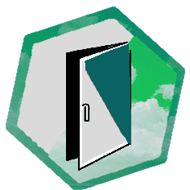

５の部屋
scene名：0328_L_05_５の部屋
【５の部屋】
中に入れば部屋は歪な形だが、ビジネスホテルのような印象を受ける。また、額が飾られている。
【探索のアイコン】＊クローゼット＊ 成功したらクリック
※他の部屋のクローゼットを探索している場合は、通常の＜目星＞で実施
壁の額に目を向けた 詳しく見る
中に入れば部屋は歪な形だが、ビジネスホテルのような印象を受ける。また、額が飾られている。
【探索のアイコン】＊５の部屋の窓＊ 詳しく見る
【探索のアイコン】＊御膳のスクラップブック＊ 詳しく見る
【探索のアイコン】＊部屋全体＊ 詳しく見る
【探索のアイコン】＊クローゼット＊ 成功したらクリック
※他の部屋のクローゼットを探索している場合は、通常の＜目星＞で実施

壁の額に目を向けた 詳しく見る

次へ
>> 〘Next Scene〙をクリック


指示があった場合のみ
クリック
クリック